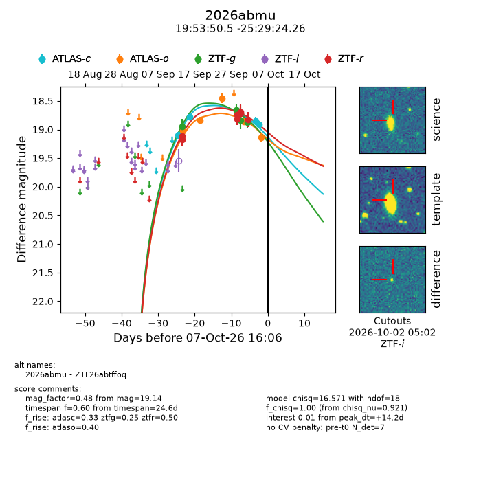
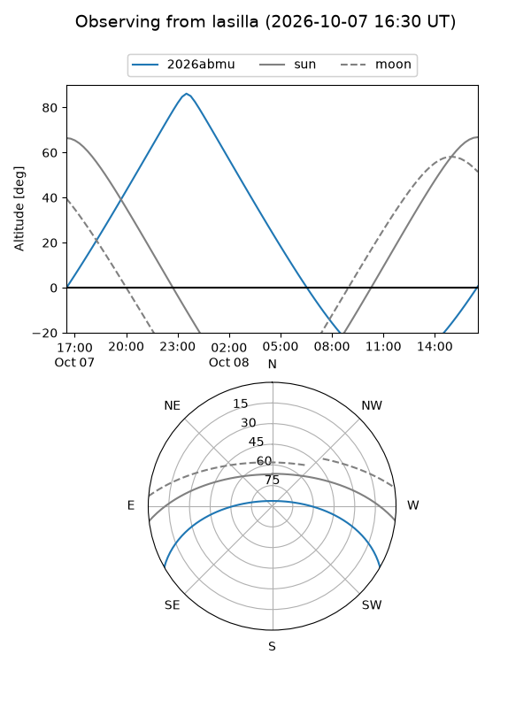
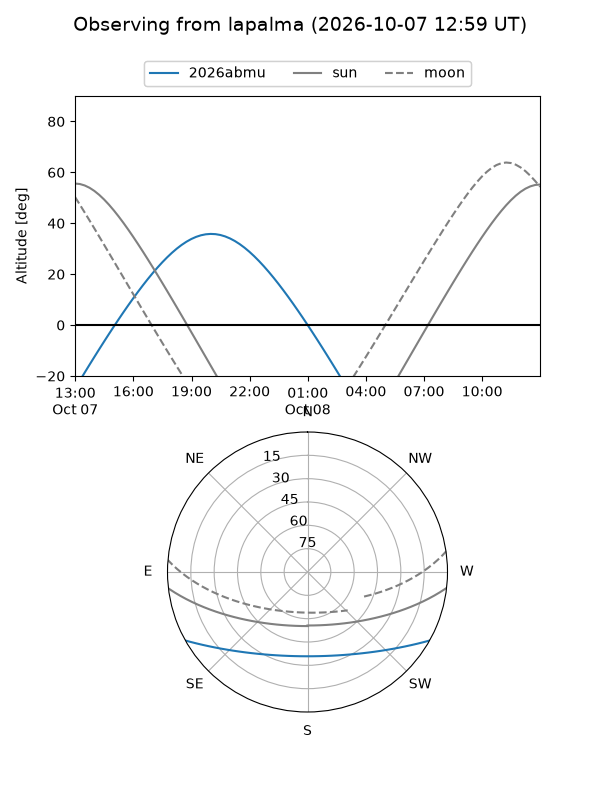
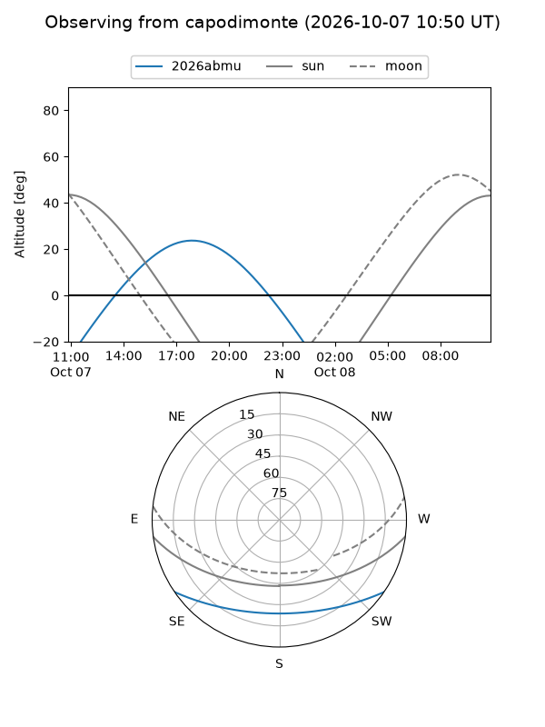
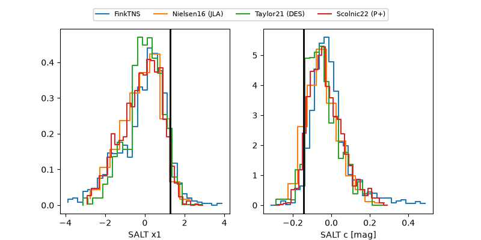

2026abmu
Target 2026abmu at 2026-10-08 04:04
Aliases and brokers:
FINK-ZTF: ztf.fink-portal.org/ZTF26abtffoq
Lasair-ZTF: lasair-ztf.lsst.ac.uk/objects/ZTF26abtffoq
ALeRCE-ZTF: alerce.online/object/ZTF26abtffoq
YSE-PZ: ziggy.ucolick.org/yse/transient_detail/2026abmu
TNS name: wis-tns.org/object/2026abmu
Direct TNS query: direct search
alt names
ZTF26abtffoq (ztf,fink_ztf)
2026abmu (tns,yse)
Coordinates:
equatorial (ra, dec) = 298.4603,-25.49007
equatorial (HMS+DMS) = 19:53:50.47,-25:29:24.26
galactic (l, b) = (15.5401,-24.34842)
Flags:
TNS type: nan
peak dt: +14.7
Photometry:
last atlasc=18.92, atlaso=19.14, ztfg=18.87, ztfr=18.83
4 atlasc, 6 atlaso, 5 ztfg, 7 ztfr detections
Lightcurve

Visibility



Additional plots
